| 日付 | 2026年5月2日（土） |
|---|---|
| 山域 | 道志山塊 |
| メンバー | 単独 |
| 山行形態 | 日帰り |
| アクセス | 電車 |
| ルート (Map) | 田野倉駅 (8:03) - (8:19) 登山口 - (9:19) 九鬼山 - (10:42) 鈴ヶ音峠 - (12:01) 高畑山 - (12:42) 倉岳山 - (13:43) 車道 - (13:54) 梁川駅 |
中央線の南に連なる九鬼山～倉岳山～高柄山の稜線は長大な尾根だ。
一日で全てを通して歩くのは難しいが、西側半分の九鬼山～倉岳山を歩いてみることにする。
九鬼山にも倉岳山にも何度も登ったことがあるが、両山を結んで歩くのは初めてだ。
田野倉駅に到着。標高395m。
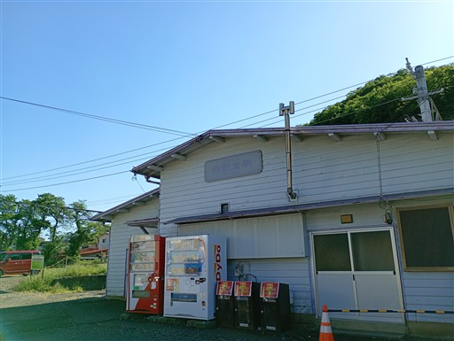
町中を歩いて九鬼山を目指す。
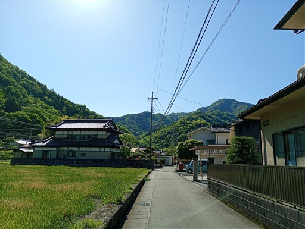
右手には富士山の頭が見えている。本日は絶好の快晴だ。
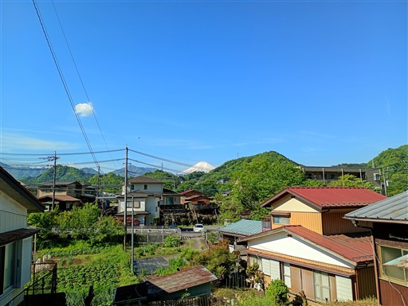
登山口に到着。
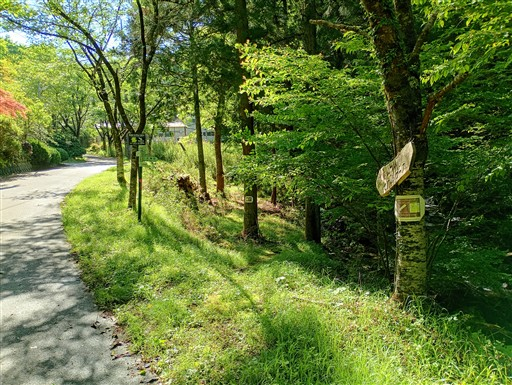
早速、沢を渡渉。
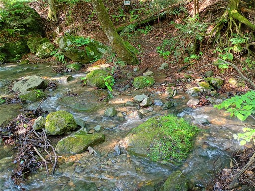
緩やかな傾斜の樹林帯の中を登っていく。
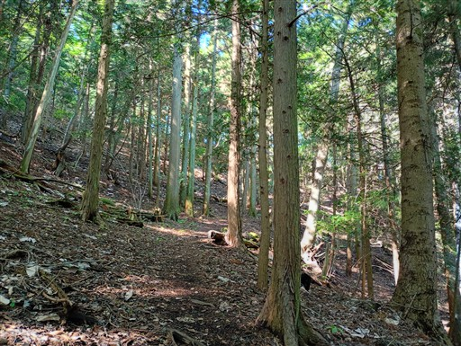
富士山・リニアビュースポットに到着。
本日は富士山が非常に美しい。
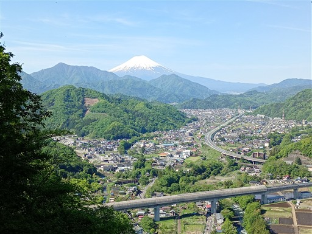
池の山に到着。四等三角点がある地味な小ピークだ。
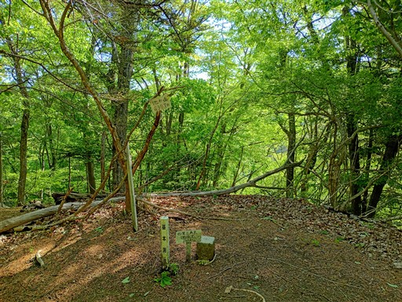
樹林帯の中の道。もう新緑の季節は終わっている。
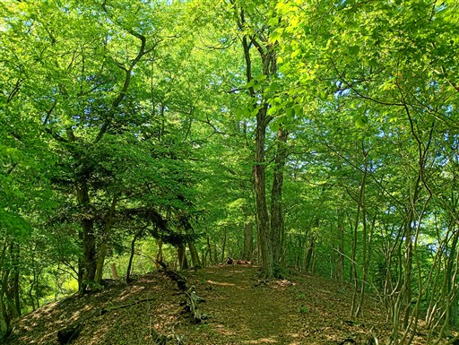
「これより急坂 要注意」の標識。
急坂だからと言って何を注意するのか…？
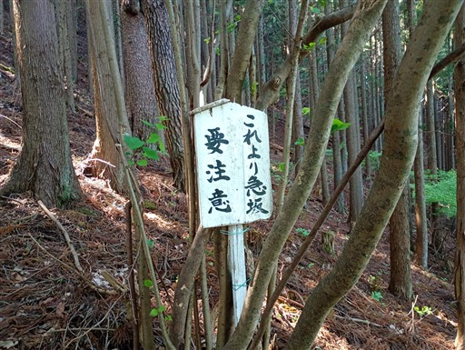
確かに急斜面だが、普通の登山道だ。
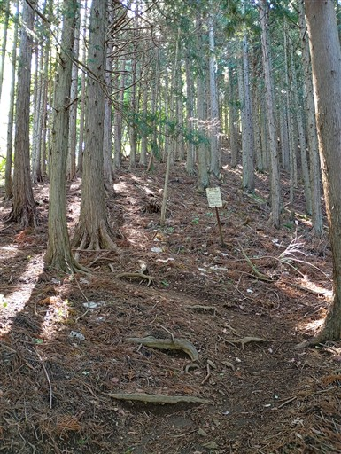
天狗岩の標識があったため、寄り道してみる。
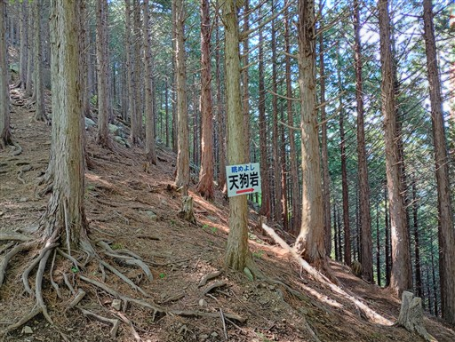
思ったよりも小さな岩だ。
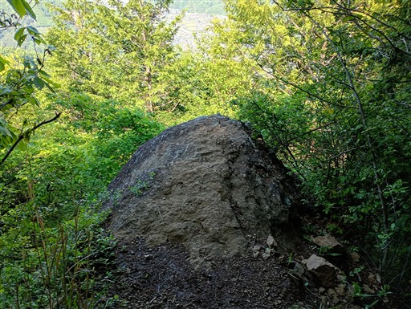
岩の上に立つと展望が広がる。
先ほどとよく似た景色だが、こちらの方が少し標高が上がっている。
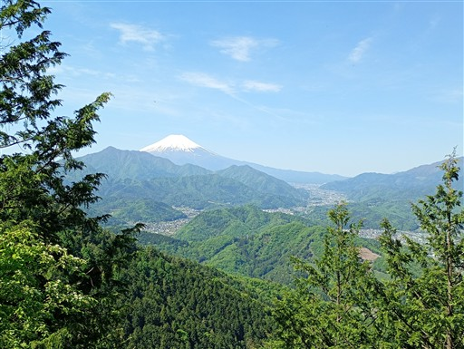
あっという間に九鬼山に到着。標高970m。
2年振り4度目の訪問だ。
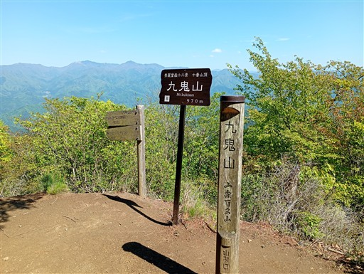
九鬼山からは思った以上に大展望が広がる。
滝子山から続く長大な尾根が横たわっている。
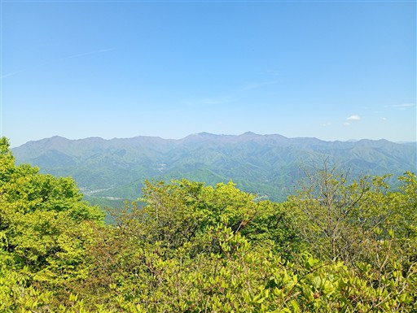
富士山は切り開きから僅かに見える程度。
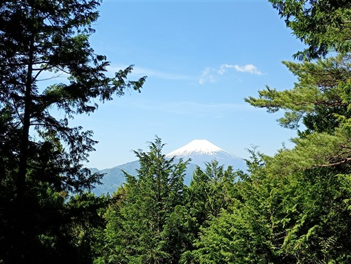
山頂の様子。登山者の数はチラホラというところ。
本日はこれからが長いので、休憩はほどほどにして出発する。
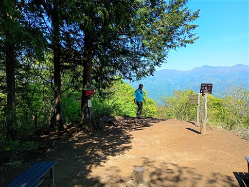
禾生駅との分岐点を過ぎる。ここからは未知のルートだ。
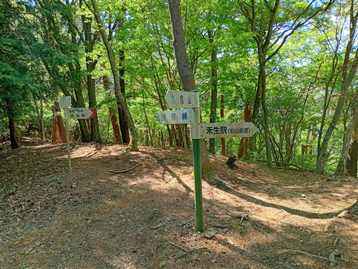
この尾根は道を塞ぐ倒木の数がすごく多い。
歩く人が少ないため、あまり整備されていないのだろうか？
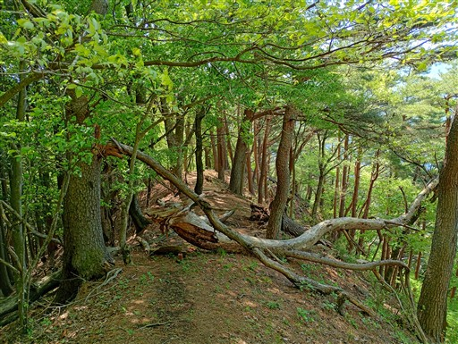
道は不明瞭ではなく、概ね歩きやすい尾根道だ。
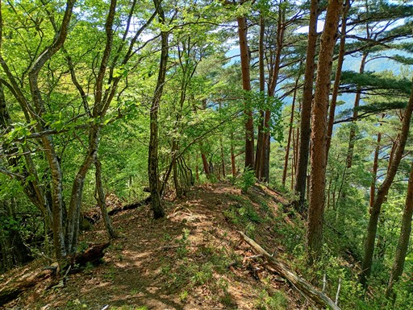
ただ、傾斜が急なところが多い。細かなアップダウンが繰り返される。
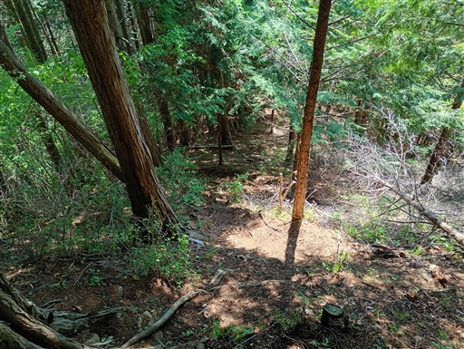
高指に到着。標高860m。尾根上にある小ピークのうちの一つだ。
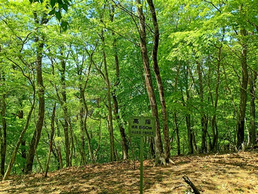
鈴ヶ音峠に到着。この尾根を横断する車道があるとは思わなかった。ちょっと残念。
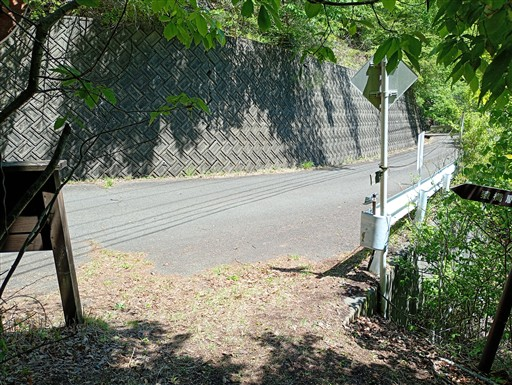
鈴ヶ音峠の小さな標識がある。
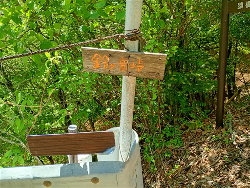
ここから登山道に入る場所が分かりにくい。
細い踏み跡を辿って尾根に乗る。
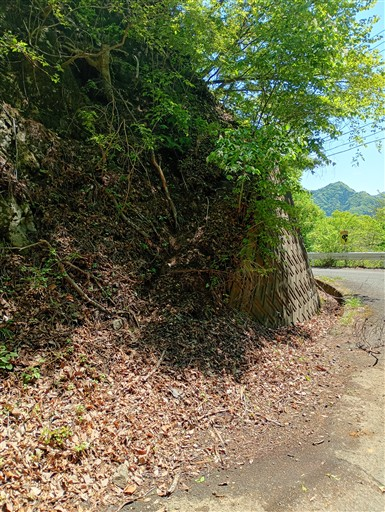
登山道は若干荒れ気味。
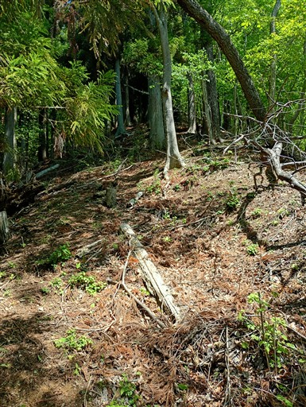
少し寄り道して鈴ヶ尾山に立ち寄る。標高834m。
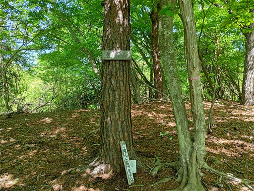
なんとこの山頂でテントを張っている人がいる。ロング縦走者だろうか？
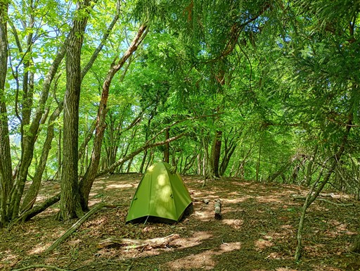
地面に所々で落ちているゼリー状の不思議な物体。
キノコ類だろうか？
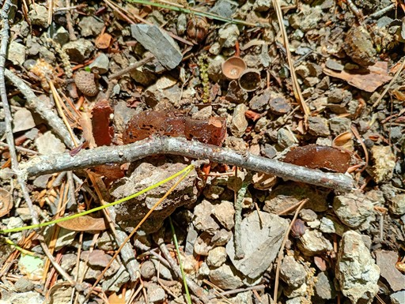
非常に美しい尾根道。
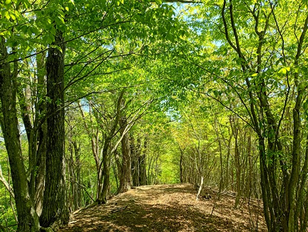
小さな石仏が祀られている。
文字を読むことはできず、いつの時代のものかは分からない。
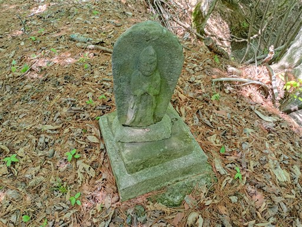
再び車道に出てくる。ガードレールがあり、乗り越える必要がある。
この車道、鈴ヶ音峠から通じている道だ。ここまでの尾根道が少し荒れている理由が分かった。
尾根ではなく、こちらの車道を歩くショートカット道を選ぶ人が多そうだ。
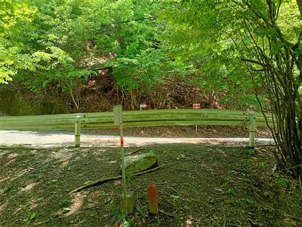
車道を横断して登山道に入って行く。
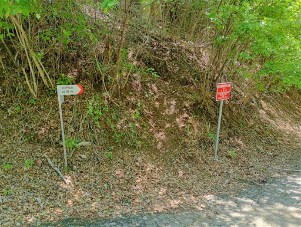
同じような美しい尾根道が続く。
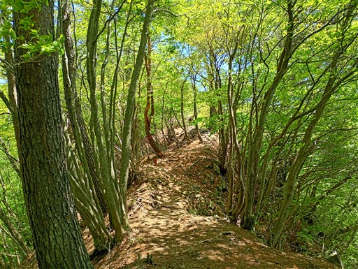
少し展望が広がる場所に出てくる。
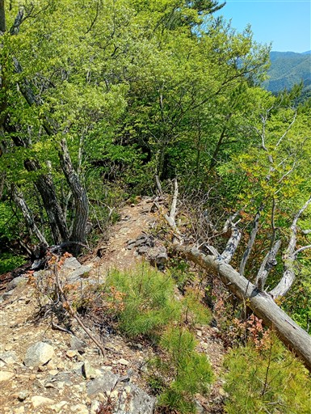
見えているのは道志山塊の山々。
富士山もチラッと見えるが、この稜線はほとんど展望が広がらない。
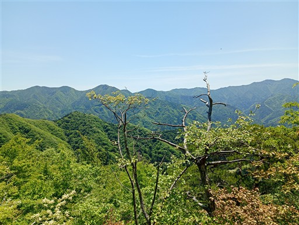
ちょっとした岩尾根。
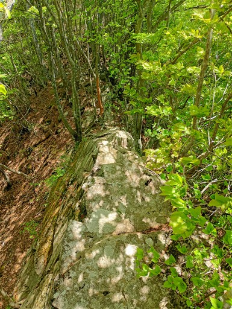
高畑山に到着。標高982m。
以前、倉岳山に登った際に、この山には来たことがある。
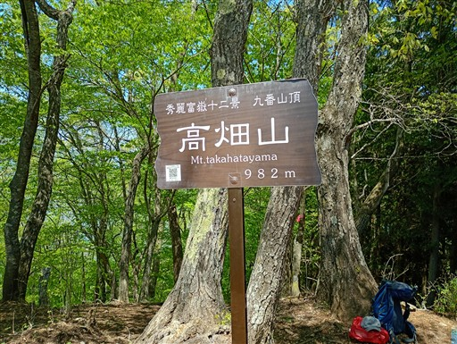
倉岳山とセットで登られることが多く、本日も多くの登山者で賑わっている。
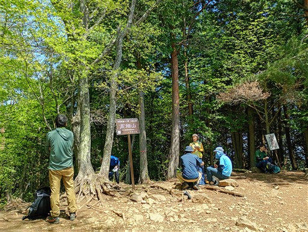
大月市秀麗富嶽十二景に選ばれているようだが、
樹木が生長してほとんど富士山は見えない。
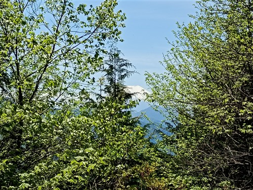
高畑山を下って穴路峠に到着。
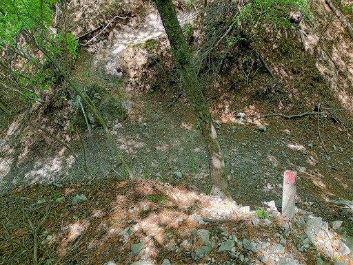
ここから倉岳山までは人通りの多い道をすぐだ。
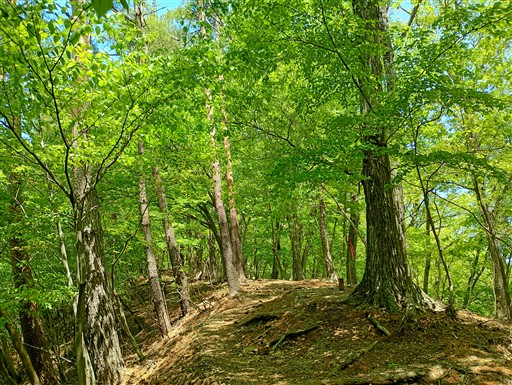
倉岳山山頂に到着。無事、九鬼山からの長い稜線を歩き切った。
こちらは6年振り4度目の訪問。
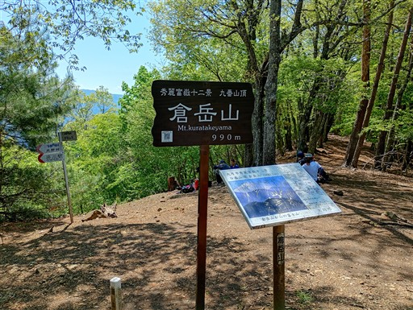
こちらの山頂からも富士山はほとんど見えない。
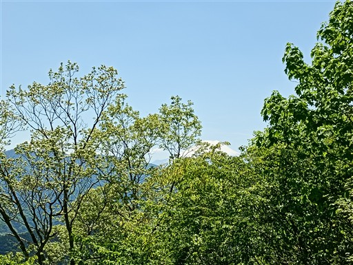
山頂自体は明るく開けているが、どの方角も大して展望は広がらない。
昔はもっと展望の良い山だったのだが…
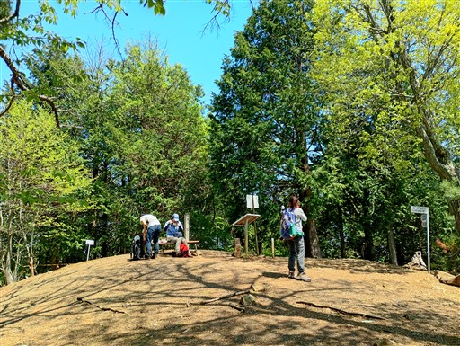
下山道は倉岳山から北東に伸びる尾根を選択。
「この先行き止まり」と書かれているが、破線ルートであることを知らずに
入ってしまう登山者を防ぐためのものと思われる。気にせず先に進む。
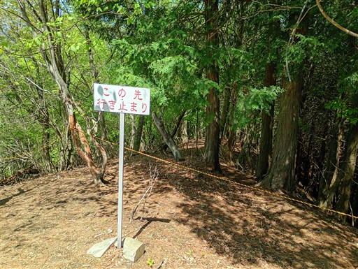
この尾根、案外難しい。道標とGPSがあるので迷わず下れるが、
尾根の分岐が結構分かりにくい。
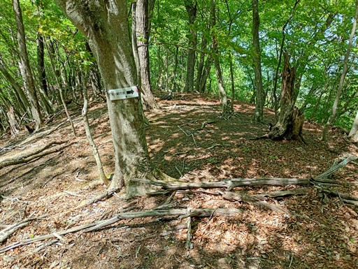
大量の落葉と滑りやすい土がミックスされた急傾斜の道。とてつもなく下りにくい。
ロングコースを歩いた後の下りで利用するのに適した道ではなかったようだ。
何より、歩いていて全く楽しくない道だ。
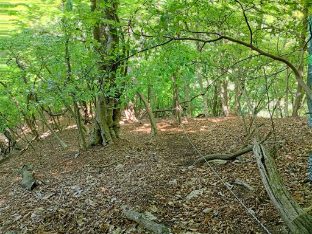
ヤマツツジ。少し目を楽しませてくれるものが見つかる。
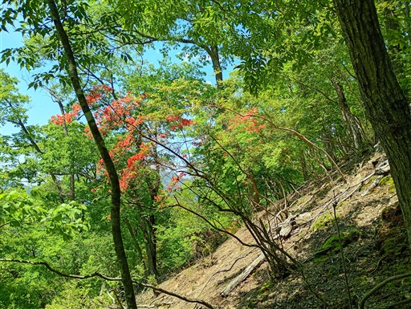
滑りやすい急坂の次は痩せ尾根。
最後は木の枝がちょっと鬱陶しい。
下界が近くなったところで、小さな祠を発見。
一般道に合流する。
歩いてきた道の方向に立てられている標識。
記載の通り、確かに難路だった。一般的な破線ルートより難易度は高いと思う。
一般道と合流して、すぐに登山口に到着する。ここからは車道歩きだ。
時計を見ると13時42分。13時59分の列車に乗れるか、ものすごく微妙なところ。
かなりの急ぎ足で梁川駅に向かう。
無事梁川駅に到着。標高275m。
本山行は、少し速足、行動食というところに注意してロングコースを歩いてみた。
小まめに行動食をとることで、あまりペースを落とさずに最後まで歩き切ることができた。
絶好の快晴の一日だったが、序盤こそ展望が広がったが、中盤以降はほとんど
展望が広がらなかったのが少し残念だった。